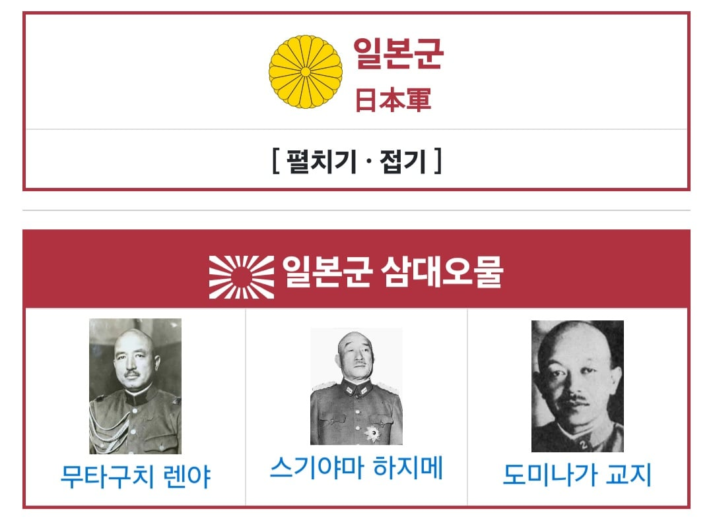
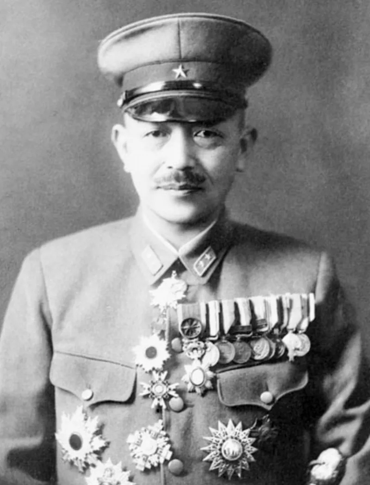
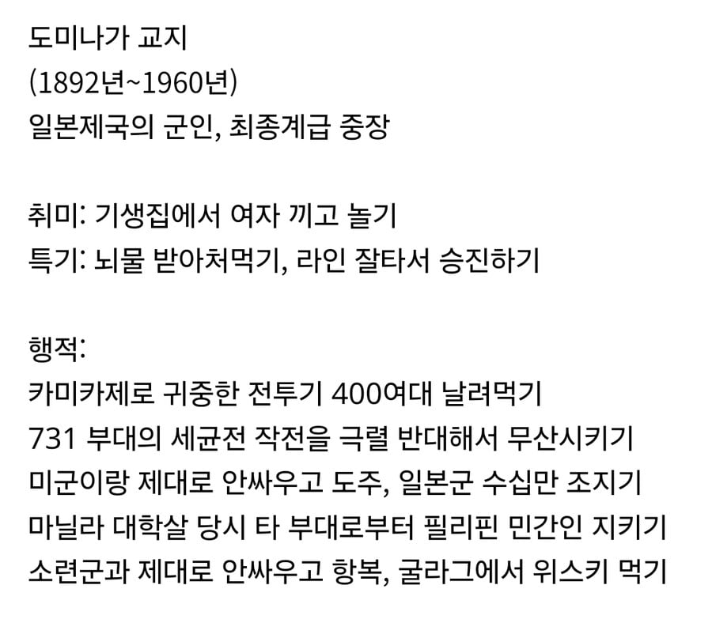

평시에는 여자끼고 뇌물처먹으면서
전쟁 터지니 아군은 최대한 날려먹고
적국 민간인은 최대한 보호함
????



평시에는 여자끼고 뇌물처먹으면서
전쟁 터지니 아군은 최대한 날려먹고
적국 민간인은 최대한 보호함
????
카미카제는 뭔소리야?
쟤만 지시한거임?
아니면 엄한곳에 꼴박했다는거?
걍 이제와서 욕하는거지 뭐
보통 자살공격을 해도 일부만 하고 일반적인 뇌격공격도 병행하고 나름 작전을 함
근데 쟤는 필리핀 일본 육군 항공대를 총괄하는 자리에 앉았는데 항공전술에 대해 아는게 아무것도 없어서 걍 무지성 카미카제만 난사함
나중에는 싸우라는 명령 무시하고 대만으로 튀었다가 부대가 없어짐
400대의 전투기를 제대로 싸우게 하지도 못하고 무지성 특공작전만 펼치게 함. 심지어 62차례에 걸쳐 축차투입시켜 다 소모시켜버림
원균과 대등하거나 그 이상...!
아니 검색해보니까 평가가 독립운동가 무다쿠치 렌야 장군님을 능가할 수준이라네 ㄷㄷ
아...제 2의 렌야센세였군요
모전구렴야 선생...
렌야는 그래도 고집이라도 쎄서 계급발로 찍어 누르거나 '하라면 그냥 해 이 새끼야' 였는데
쟤는 '몰라? 나한테 왜 물어봄? 군단장이면 다 알아야함?'
비행기 나갈때 칼들고 설친 사람 아님?
존나 인간적이네
'독립군'
표정부터 인자함이 느껴지네 ㅋㅋ
뭐라고 정의 해야 하는 사람이지....
반항아지 뭐 ㅋㅋㅋ
전형적인 무능하고 위선적인 낙하산이지 뭐 ㅋㅋㅋ
그 독일 장군이 얘기한게 생각나네, 무능한데 부지런한놈이 제일 위험하고 무능한데 고집이쎄고 자존심까지 쎈놈이 두번째로 위험하다고 ㅋㅋㅋㅋㅋㅋ
굴라그에서 마시는 위스키는 얼마나 맛났을까ㅋㅋㅋㅋㅋㅋㅋ
와 근데 굴라그에서 위스키까지 줄 장도면 대접해준거 아님?ㅋㅋㅋㅋ
소련은 독일군이랑 다르게 일본군에는 별 악감정이 없었음. 뭐 패악질 할 틈도 없이 순식간에 개작살내버려서..
거기에 일반 병사도 수류탄들고 자폭하는 일본군인데, 무려 중장이 항복때려서 매우 비싼 포로였음
스파이였을까?
저건 무다구치렌야도 비슷함.
포로에 대한 가혹행위 금지, 점령지 민간인에 대한 수탈 금지 등등등...
애는 착혀....
어둠의 대한독립군이 또
무다구치렌야상 옆에 있는거면
어둠의위인 아니냐 ㅋㅋㅋ
셋다 군인으로서는 무능했는데 인간으로서는 도덕을 포기하지 않았다는게 아이러니함
2차 세계대전 당시 일본군이 아닌, 평화로운 시대의 지휘관들이었으면 평범하게 군생활하다 전역했을 양반들인데 참
원균은 군인으로서도 무능하고 도덕성마저 악마라니.. 얼마나 씹새끼인걸까
일제 패망에 매우큰 영향을 끼침
굴라그 위스키는 포상이지


집단광기시대에 저렇게 이성가지고 있는것도 대단하긴함
뭐야 그냥 착한사람이잖아
삼대오물 ㅋㅋㅋ
개인적인 쾌락을 추구하는 이기적인 사람으로 봐야 하나. 죽음을 각오하고 싸우기 vs. 항복하고 포로로 대우받기 중에 후자를 택하는 것도 보면ㅋㅋ
일본군이 서양방식 도입해서 선진화 했지만 장성들이 똥꼬빨고 올라간방식이라 무능함의 극치엿음
어 저거 완전 임진왜란에 그...
리버스 원균이잖아
???? : 조센진 종자새끼다!
일본 군부가 싫었나보지
1. 노는거 좋아하고 권력은 짜릿했으나
2. 싸우기 싫고 무능했다
3. 그래도 민간인은 보호해야지 하는 최후의 양심
그러니까 그냥 어디 동네 바보같은 애 앉혀놨군.
대한독립군 3대 영웅 ㄷㄷㄷㄷㄷㄷ
존나 게으른 천재가 2차대전 일본제국에 태어난 이야기
렌야 옆에 있다는거 만으로 기준이 확실하다
일본이 장점이자 단점인게 윗대가리가 병신이여도 끝까지 믿고 밀어주는 경우가 많다는거임, 이게 잘 되면 크게 성공하긴 하는데 못되면 아주 개판이 따로 없다는거임 ㅋㅋㅋㅋ
교지 센세
뭐야 착한사람이자나
우리한테는 위인 아니냐